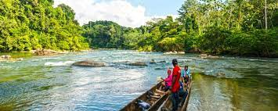
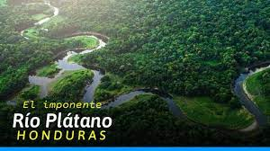

Pagina principal
Plantas en Honduras
Animales en Honduras
Parque nacional la tigra

Biosfera del rio Platano
El río Plátano tiene una longitud de 100 kilómetros1 y se encuentra localizado en el departamento de Gracias a Dios en Honduras. Corre a lo largo de la reserva de la biosfera de Río Plátano, la cual tiene una extensión de 5250 km².
La reserva corresponde en un sentido amplio, con base a las categorías de zona de Holdridge, al bosque tropical húmedo y muy húmedo, albergando áreas marino-costeras importantes y una variedad de hábitats ricos en biodiversidad, que incluyen extensos manglares, asociación de bosques de pino y tique en sabana, humedales, lagunas, arrecifes de coral y cayos. Sin embargo, la mayor parte de río Plátano está cubierta por bosque lluvioso
